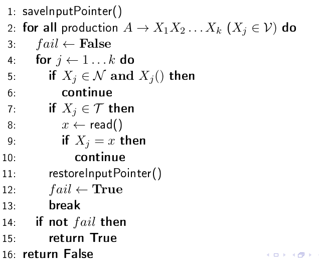
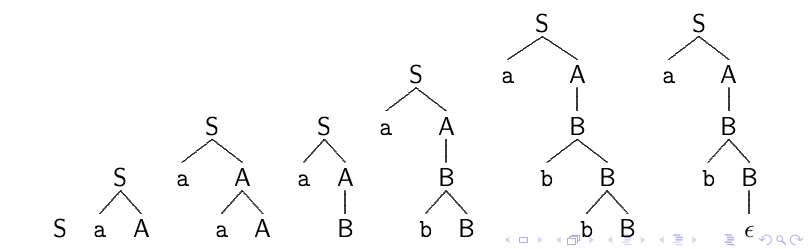

Parsing 1, 27/10/22
Table of contents
1 Parser a discesa ricorsiva
In questo corso si tratteranno principalmente i parser a discesa ricorsiva, che costruiscono il parse tree a partire dall'assioma verso il basso, controllando se la stringa generata corrisponde con l'input preso dal lexer.
1.1 Parser non deterministico
Pensando ad un algoritmo non deterministico, che quindi ad ogni passo sceglie la produzione più "adatta", si potrebbe semplicemente abbozzare uno pseudo-codice del genere:
for j = 1…k do:
if \(X_{j} \in N\) then Xj()
else:
\(x\) \(\leftarrow\) read()
if Xj ≠ \(x\) then error()
Ad ogni passo, se ci si trova su un carattere terminale si controlla
che esso faccia "matching" con l'input, altrimenti
se ci si trova su un non terminale si richiama ricorsivamente la
procedura sul carattere corrente. Si tenga a mente che in questo
primo codice non ci si pone il problema di scegliere la produzione giusta,
perchè l'algoritmo è non deterministico
1.2 Parser deterministico
Il passo successivo della progettazione di un parser consiste nel cercare di eliminare il non determinismo, pensando ad un algoritmo che scelga la produzione giusta tra le varie disponibili.

1.2.1 Esempio:
Considerando questa grammatica:
\begin{aligned} & S \rightarrow aA \\ & A \rightarrow aA | B \\ & B \rightarrow bB | \epsilon \end{aligned}si ottiene il seguente albero di derivazione: 
Se si analizzano il codice e la figura, ci si rende conto del seguente problema:
se ad esempio invece di \(A \rightarrow aA\) avessimo usato la produzione \(A \rightarrow Aa\),
allora l'algoritmo cadrebbe in una cascata infinita di chiamate ricorsive.
Una produzione che da origine a questo fenomeno prende il nome di left recursion.
Il motivo per cui accade è che il parser analizza sempre il primo carattere prodotto,
ma se questo è un non terminale, allora su di esso verrà applicata una riscrittura per verificarne
la validità … \(\rightarrow \infty\)
2 Left recursion e cicli
Per progettare una grammatica in modo efficate, si può pensare alla scrittura della stessa nel modo più semplice possibile, senza pensare alla ricaduta in ricorsioni infinite di vario genere. Solo in un secondo momento è conveniente applicare un processo di raffinamento ed eliminazione di ricorsioni infinite. Negli esempi che seguono, si presuppone che le grammatiche non presentino errori banali come cicli infiniti, cioè sequenze di derivazioni di questo tipo \(\downarrow\)
\begin{equation} A \overset{*} \Rightarrow A \end{equation}Ecco quindi un'esempio di eliminazione di left-recursion:
2.1 Eliminazione left recursion(esempio)
Si consideri la seguente grammatica:
\begin{aligned} & A \rightarrow A\alpha \\ & A \rightarrow \beta \end{aligned}come si può notare dalla prima produzione, c'è un problema di left recursion. Per eliminarla si può applicare uno specifico algoritmo di eliminazione. In particolare, si riscrive la produzione che presenta left recursion in questo modo \(\downarrow\)
\begin{cases} & A \rightarrow \beta_{1}A' | \beta_{2}A' | ... | \beta_{m}A'\\ \\ & A' \rightarrow \alpha_{1}A' | \alpha_{2}A' | ... | \alpha_{t}A' | \epsilon \end{cases}in cui:
- \(\beta_{x}\) \(\rightarrow\) stringhe che non hanno left recursion, quindi quelle che non danno problemi;
- \(\alpha_{x}\) \(\rightarrow\) parte a destra delle stringhe che presentano left recursion, quindi tutto tranne il carattere non terminale che da problemi;
Alla fine di questo processo si è sicuri di non avere delle left-recursion,
perchè tutte le produzioni iniziano per un carattere terminale.
2.2 Backward Production
Per essere sicuri di aver progettato una grammatica valida, è importante anche
eliminare le backward production.
Sia \(A_{1}...A_{n}\) un'ordinamento arbitrario dei caratteri non terminali,
\(\blacktriangleright\) si dice backward production una produzione del tipo \(A_{i} \rightarrow A_{j}\) con \(i > j\) nell'ordinamento.
L'algoritmo per l'eliminazione di queste produzioni è più chiaro se spiegato tramite un'esempio \(\downarrow\)
3 Miglioramento di una grammatica (esempio finale)
Si consideri la seguente grammatica:
\begin{align} & A \rightarrow Bb|a \\ & B \rightarrow Bb|Ac \end{align}Consideriamo l'ordinamento {A1, B2}.
3.1 Eliminazione B.Production
Per eliminare le backwards production, per prima cosa ci si posiziona sulla produzione problematica, in questo caso la seconda, che può portare indietro la riscrittura al carattere non terminale A partendo da B.
Successivamente si riscrive il carattere non terminale di destinazione (quindi A in questo caso, che si trova prima di B nell'ordinamento arbitrario che abbiamo scelto) e lo si riscrive usando le sue stesse produzioni, ottenendo:
\begin{align} & A \rightarrow Bb|a \\ & B \rightarrow Bb|Bbc|ac \end{align}ora si è sicuri di non avere nessuna backwards production, e si procede con l'eliminazione delle left recursion, come spiegato prima.